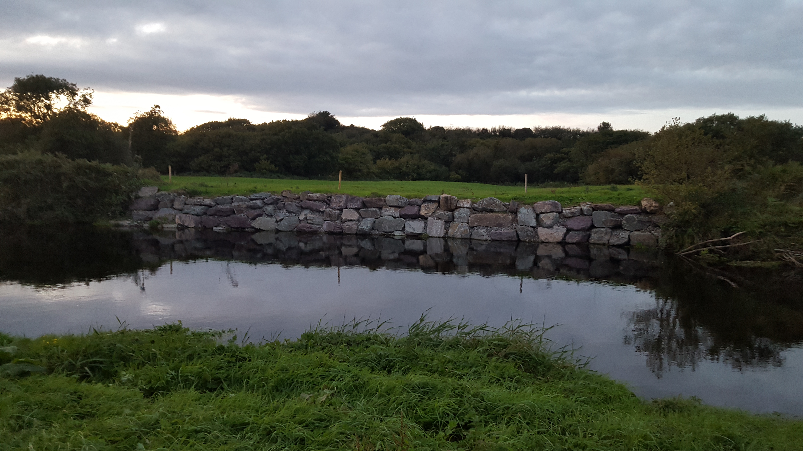
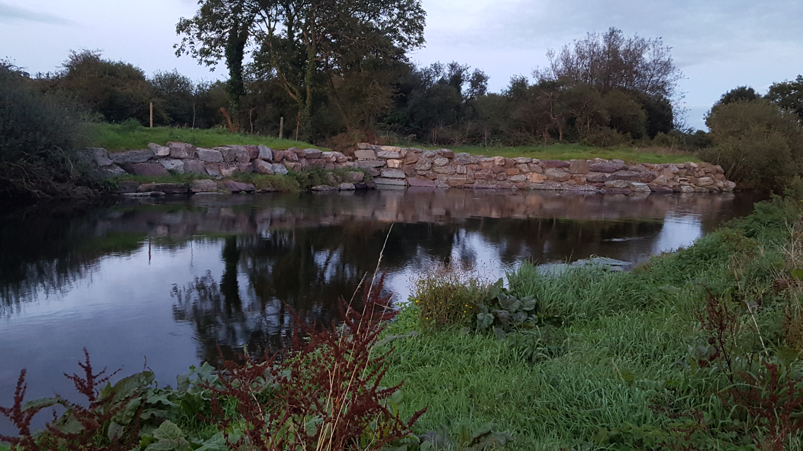
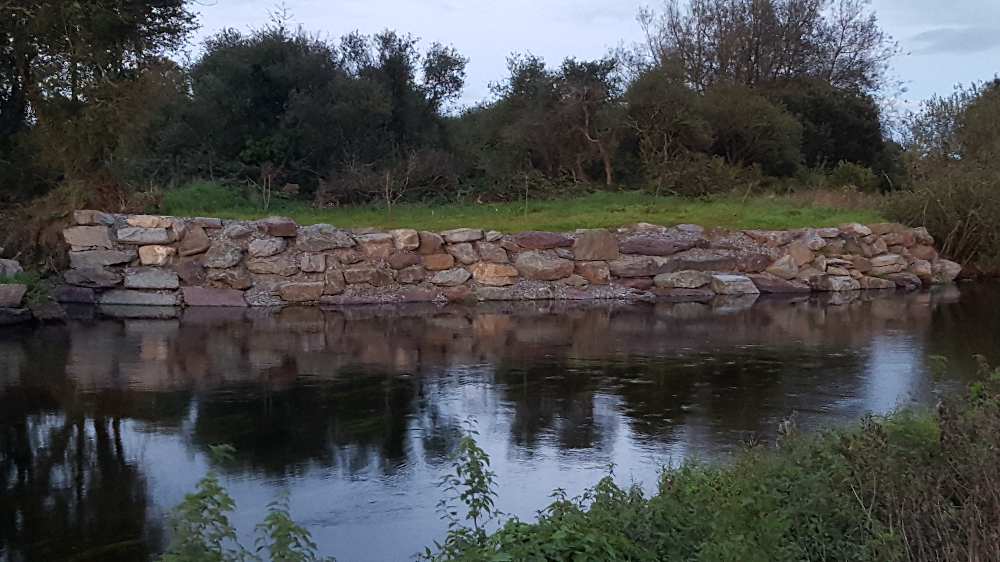
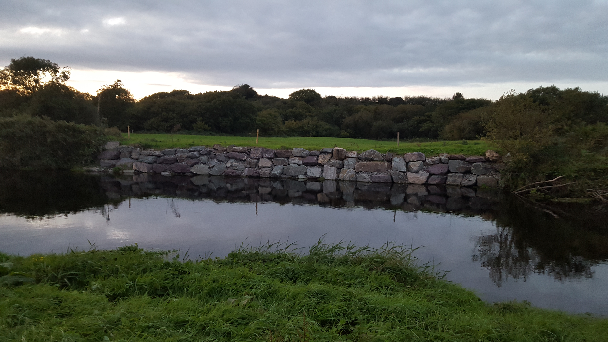
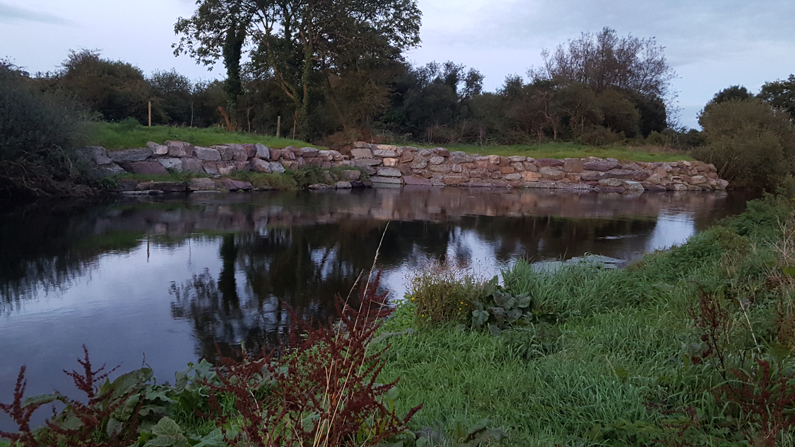
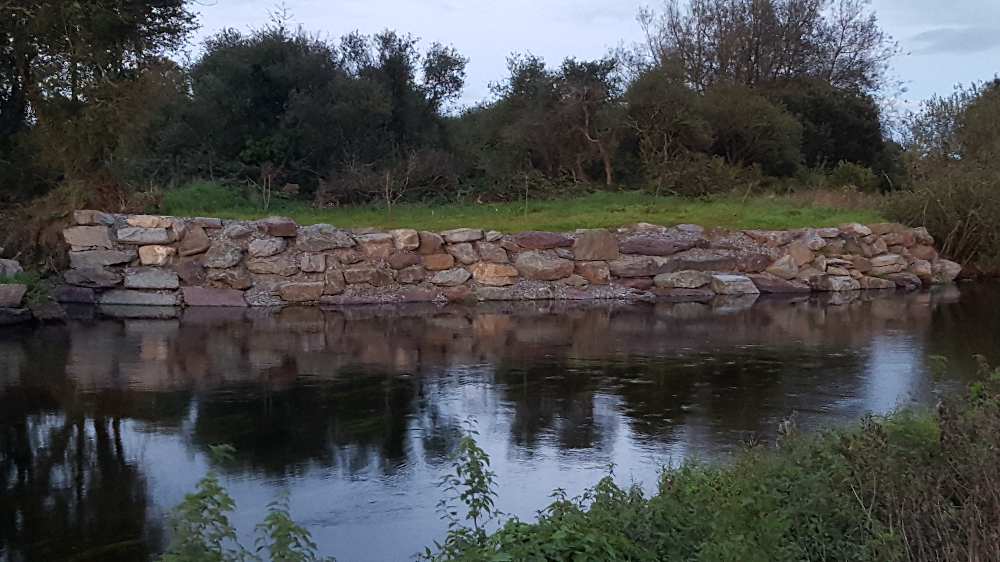

Development Works
Bandon Angling Association recognizes the importance of protecting, conserving and enhancing fisheries habitat and angling potential along waters controlled by the club but also where possible around the wider catchment. The club has strived to be as proactive as possible in this regard for the benefit of the river and its members. Over the years, many projects have been completed and some of these are detailed below.
Desert Bridge 2020


Deasys Stream 2018


Deasys Turn 2017

 





2015
Bandon Angling Association undertook development works to increase the angling potential along 7 pools which included Pot Hole, Small Pot, Longfields, Strand Hole, Boat Hole, Smiths Stream and Deasy’s Turn. Deflectors were constructed in order to increase velocities and create improved angling conditions. Boulders were strategically placed in runs and pools to create salmon lies and gravel was tossed at the tail of pools to improve spawning conditions for salmonids and lamprey. At Deasy’s Turn, bank erosion was a problem along the northern bank. This was continuously releasing silt which was having a negative effect on spawning conditions downstream. Rock armour was installed to prevent further erosion. This work was designed by the late Pr. Martin O’Grady, Senior Research Officer of Inland Fisheries Ireland and Jason Nash, Environmental Officer of Bandon Angling Association. Works were supervised by Jason Nash and carried out by Tony McCarthy Plant Hire. This project was part funded by the Office of Public Works.
2017
Erosion persisted on the northern bank of Deasy’s Turn due to extreme flood in the winter of 2015. New areas of erosion developed which were undermining banks, releasing silt into the river and reducing the angling potential of this stretch. Inland Fisheries Ireland was consulted and a solution, in liaison with the landowner, was formed. Funding was granted by Inland Fisheries Ireland through the Salmon Conservation Fund and works were undertaken by Tony McCarthy Plant Hire in the summertime under the supervision of committee member Michael Waugh.
2018
In an effort to improve juvenile salmonid habitat in a spawning stream, tree coppicing works were sensitively conducted by George Earle and his team at County Tree Care in February 2018. Survey work revealed that much of this stream was tunneled which had resulted in a lack of light penetrating into the stream. This in turn reduces stream productivity and negatively effects juvenile salmonid spawning and nursery conditions. Care was taken to prioritise selection of trees in order to protect trees with high ecological value and maximise effectiveness of the project. Post works, gravels in important spawning areas were raked and this has resulted in an increase in observed spawning activity. These works were supervised by Jason Nash whilst funding from Inland Fisheries Ireland through the Salmon Conservation Fund was organized by committee members Dave McCan, Michael Waugh and Jason Nash.
2020
Some stretches along club water are not easily fished due to access issues and this can lead potentially highly productive angling water becoming unfishable. One such place was along the northern bank above Desert Bridge at Rock Hole. In an effort to improve access for club members and visitors alike, George Earle of County Tree Care was employed to fell a small number of trees to ease access for anglers wishing to fish any method but also undertake the works in such a way that there would be no significant negative consequence for the surrounding environment. This small project was very successful and has proved to be very worthwhile!! Organisers included Phil Dewey, Fergal O’Regan and Jason Nash whilst the project was funded solely by the club.
2021
Over recent years, due to a combination of various different environmental factors, salmon on the Bandon have developed a tendency to spawn more in the upper catchment. Taking this evidence into consideration, Bandon Angling Association sought to gain a better understanding of salmonid habitat and limiting factors of the Cullenagh Lake Stream in Dunmanway. This tributary was chosen as juvenile salmon stocks in a recent survey appeared to be relatively healthy but other surveys concluded instream habitat had been affected by various different factors. Pascal Sweeney of Sweeney Consultancy was commissioned to conduct a walkover survey, produce a report detailing present conditions and recommend actions for future works. Funding for this project was acquired from Inland Fisheries Ireland through The Salmon and Sea Trout Rehabilitation, Conservation and Protection Fund.